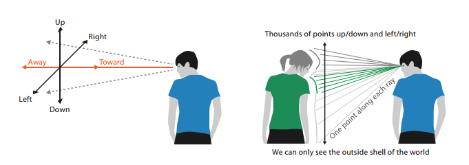
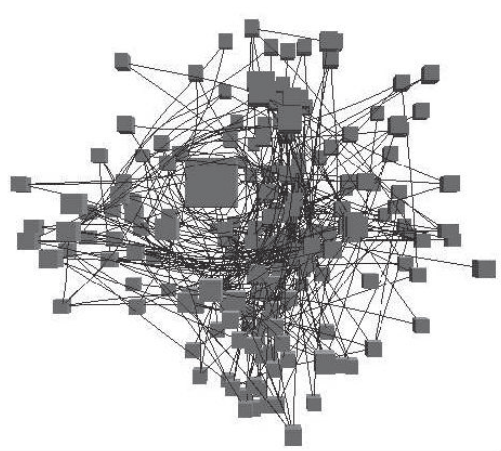
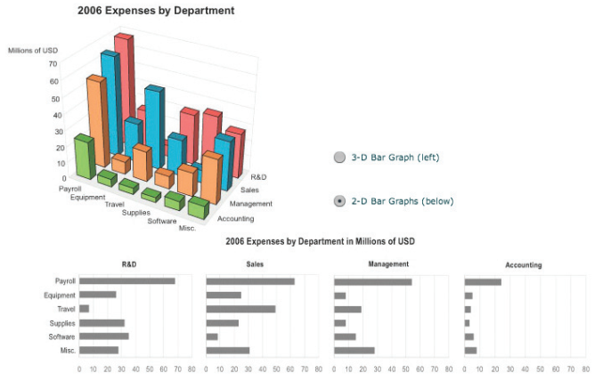
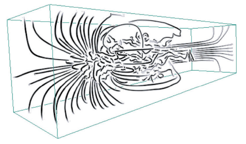
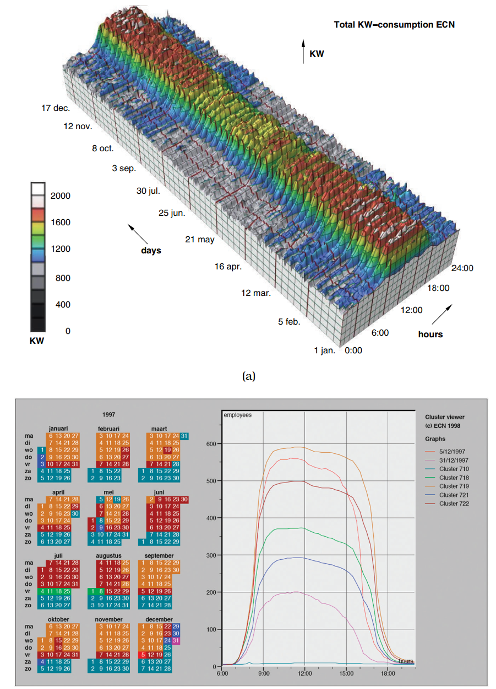
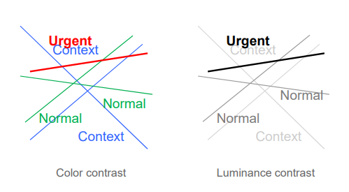
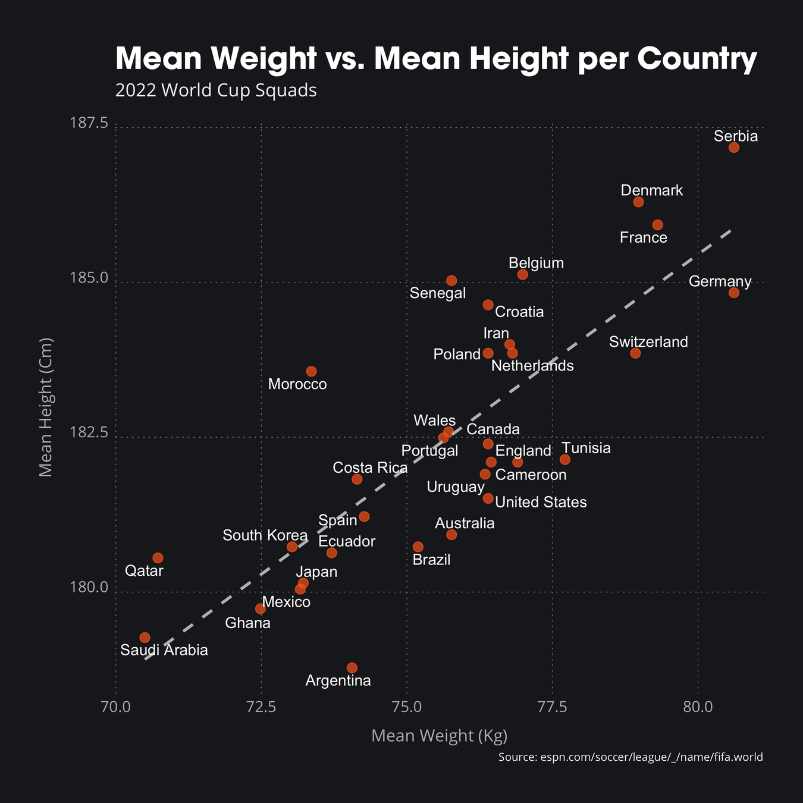

Vizualizacija podataka
Predavanje 05
Smjernice vizualizacije
- Cilj predavanja je predstaviti osnovne smjernice i savjete koji mogu biti od koristi prilikom osmišljavanja i izrade različitih vizualizacija
- Ništa od navedenoga nije pravilo, niti se morate toga "slijepo" držati
- bez nepotrebnog korištenja 3D-a
- bez nepotrebnog korištenja 2D-a
- oči su bolje od pamćenja
- rezolucija prije imerzije
- prvo pregled, detalji na zahtjev
- važnost odziva
- preglednost u crno-bijelom
- funkcionalnost prije izgleda
Bez nepotrebnog 3D-a
- 3D vizualizacija je prikladna kada želimo prikazati oblike koji su prirodno trodimenzionalni
- u tom slučaju prednosti nadmašuju nedostatke
- u ostalim slučajevima, korištenje 3D-a mora imati "opravdanje"
- često je 2D prostorno enkodiranje bolji odabir
- dojam dubine se prenosi na različite načine
- okluzija
- distorzija perspektive
- sjene i osvjetljenje
- binokularni disparitet
- poznavanje (dojam) veličine
- ...
Bez nepotrebnog 3D-a
- doživljaj ravnine
- male razlike između horizontalne i vertikalne osi
- prednost dajemo vertikalnoj ali u manjoj mjeri
- odnos veličina i gustoća je konstanta
- doživljaj dubine
- subjektivni dojam je manji nego stvarna vrijednost

Bez nepotrebnog 3D-a
- Okluzija (stapanje) skriva informacije
- objekti mogu biti skriveni iza drugih
- potreban efekt paralakse (parallax) kako bi dobili dojam relativnih udaljenosti između objekata
- potrebna interaktivnost vizualizacije
- utrošak vremena (za analizu)

- Skriveni objekt može biti važan!
- Teže je uočiti strukturu ako scene ako se ne koriste standardni oblici
- Potreban je veći kognitivni napor (i utrošak vremena) za interpretaciju vizualizacije
Bez nepotrebnog 3D-a
- Još jedan problem je perspektivna distorzija
- udaljeni objekti izgledaju manji i mijenjaju poziciju na ravnini
- Perspektiva narušava dojam prostornih kanala

Bez nepotrebnog 3D-a
- Poznavanje veličine objekata je jedan od načina kako doživljavamo dubinu
- ako vidimo nepoznati predmet pokraj automobila, možemo procijeniti njegovu veličinu
- problem je ako su svi predmeti (oblici) nepoznati
- Sjene pomažu doživljaju dubine i dimenzija objekta
- zagušenost kanala
- Nakošeni tekst nije čitljiv
- pogotovo na digitalnim zaslonima
Prednosti 3D-a
- Kada je potrebno razumijevanje 3D geometrijske strukture
- nacrt, tlocrt, bokocrt <=> 3D model
- Skupovi podataka koji sadrže 3D prostorne podatke
- dinamika fluida (ili zraka)
- medicinska mjerenja
- molekularna interakcija

Usporedba prikaza
- 3D prikaz
- okluzija
- distorzija
- uočava se jedino periodičnost visoke razine
- 2D prikaz
- kalendarski prikaz
- grupiranje podataka
- jednostavnija usporedba

Bez nepotrebnog 2D-a
- slično kao i za 3D - uvođenje dodatne dimenzije mora biti smisleno
- ponekad se podaci mogu prikazati 1D listom
- maksimalna iskoristivost prostora
- jednostavnije pretraživanje (sortiranih)
- ako nam nije potrebno razumijevanje topologije
Percepcija vs. memorija
- Pomicanje očiju kako bi vidjeli različite podatke koji su istovremeno prikazani zahtijeva manje kognitivno opterećenje nego korištenje memorije kako bi napravili usporedbu
- Ograničenje kratkotrajne (radne) memorije
- nemogućnost upijanja novih informacija
- Pozornost i koncentracija
- također "ograničeni" resursi
- Slaba osjetljivost na promjene
Animacija ili usporedni pregled
- Neke vizualizacije koje se temelje na animaciji također mogu biti kognitivno zahtjevne
- animacije u svrhu zabave su precizno osmišljene
- animirana vizualizacija može imati mnoštvo istovremenih promjena - gdje će biti fokus korisnika?
- Animacija je korisna kada se koristi u obliku tranzicija između dvije vrijednosti ili dva skupa podataka (zadržava se kontekst)
- Nagle promjene scene
- teško je uočiti promjenu
- pomaže ako korisnik ima mogućnost kontrole
- Nekad je usporedni pregled bolji od animacije
- ovisi o broju i vrsti podataka
Rezolucija prije imerzije
- Broj piksela (rezolucija vizualizacije) na ekranima je važan resurs
- najčešće ograničenje pri izradi vizualizacije
- Različiti načini imerzije
- stereo prikazi
- VR naočale
- projekcija nad cijelom prostorijom
- "cijena" je uglavnom manja rezolucija
- pitanje dostupnosti
- mogućnost interakcije sa vizualizacijom
Važnost odziva
- Jedna od važnih karakteristika pri izradi vizualizacije je latencija interakcije - vrijeme odziva na interakciju korisnika
- Ljudi ne doživljavaju latenciju jednako u svim slučajevima
- očekivano vrijeme za određeni zadatak
- 0.1 sekunda je vrijeme percepcijske obrade
- 1 sekundu smatramo "trenutnim odzivom"
- 10 sekundi je očekivano za kratke zadatke
- očekivano vrijeme za određeni zadatak
- Kod vizualizacije latencija predstavlja vizualni odziv da je određena operacija uspješno dovršena
- indikator napretka za duže akcije
- Odabir latencije (klik, hover sa odgodom ili instantno)
Važnost odziva
- Različiti načini prikaza vizualnog odziva
- fiksni okvir sa strane
- spora latencija (pomak očiju)
- više informacija, bez okluzije
- pop-up prozor - suprotno od okvira
- vizualno naglašavanje
- fiksni okvir sa strane
- Osvježavanje podataka
- problem sa velikim skupovima podataka
- Cilj je fluidna interakcija i fokusiranost korisnika na najvažnije elemente vizualizacije
- Interakcija ima prednosti i nedostatke
- veći raspon prikaza
- potrebno ljudsko vrijeme i pozornost
Crno bijeli prikaz
- Vizualizacija može biti prikazana na različitim medijima
- Najvažniji aspekti vizualizacije bi trebali biti razumljivi čak i ako je vizualizacija prikazana bez boje (crno-bijelo)
- Atribut koji želimo naglasiti je bolje predstaviti kanalom svjetline
- nijansa i zasićenje (hue i saturation) za sekundarne atribute

Funkcionalnost prije izgleda
- U idealnom slučaju vizualizacija bi trebala biti istovremeno učinkovita i vizualno privlačna
- ako to nije moguće, učinkovitost bi trebala imati prednost
- "Ružna" vizualizacija koja ispravno prenese informacije se može naknadno doraditi
- to nije slučaj sa neučinkovitom vizualizacijom
- Izgled je i dalje važan
- ljudi će između dvije jednako učinkovite vizualizacije uvijek odabrati onu sa boljim izgledom
